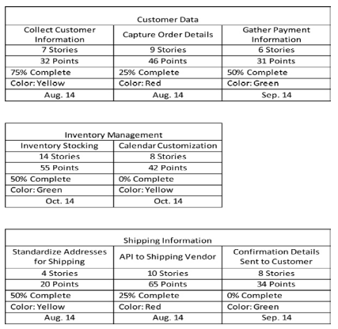
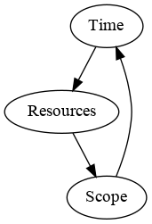
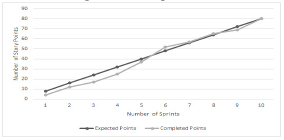
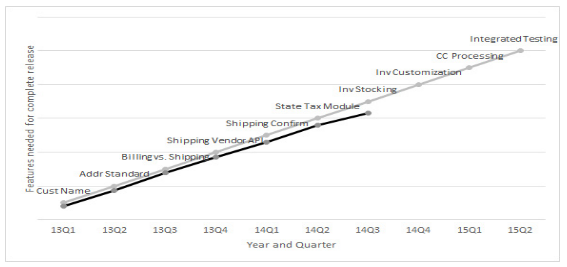
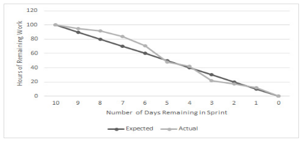
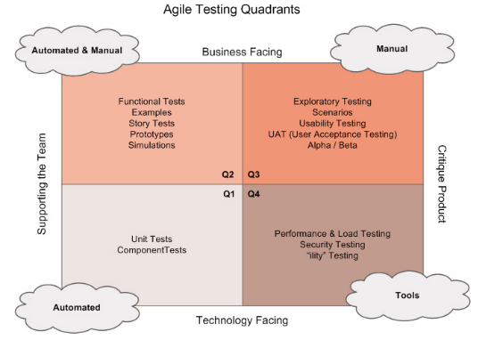
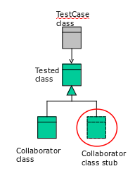
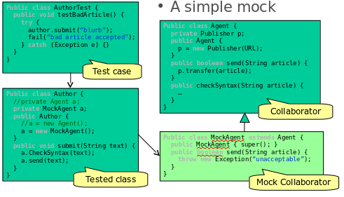
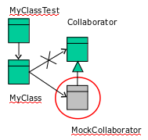
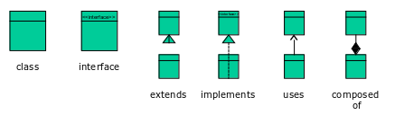

Agile Methodologies 2
Table of Contents
- 1. Feature Driven Development (FDD) SDLC
- 2. Kanban SDLC
- 3. Test template
- 4. Product Backlog
- 5. Working Agreement
- 6. Definition of DONE
- 7. Prioritization Techniques
- 8. Estimation Techniques
- 9. Team Participation Estimation Techniques
- 10. Grooming
- 11. Planning
- 12. Test Techniques and Measures
- 13. System State
- 14. Meetings or Ceremonies
- 15. Triple Constraints
- 16. Tracking
- 17. Tracking quality
- 18. Testing, Quality and Integration
- 19. Mock ups
1 Feature Driven Development (FDD) SDLC
- Works with the concept of classes that must be integrated to the deliver the full set
- More model-driven approach. Aka "plan by feature", allows to support large projects and teams
- To manage requirements FDD breaks features into three levels
- Highest level: problem domain/subject area that is broken down into the
- Business activity
- Individual features
- Uses the parking lots method to track progress

2 Kanban SDLC
- Just-in-time development and evolving the process to create on optimal system
- Uses a visual signboard and a work-in-progress pull method
- Does not use iterations (although it can), advocates continuous workflow
- Fits projects that are unpredictable, with unplanned workflow, and require deployment in less time than a typical iteration
2.1 Four key principles:
- Foster leadership at all levels of the organization: everyone is encouraged to act as a leader, at any level (even entry).
- Start with what you know: Understand where you are today and evolve from that point.
- Focus on incremental an evolutionary change: Do not make drastic changes. Evolve slowly but makes changes to be impactful.
- Respect current methodologies and roles: Remember that the current process is used for a reason. Makes changes only if certain methods do not help the team.
2.2 Core practices:
- Visualize workflow: Kanban board with columns to visualise the workflow.
- Limit work in progress, and pull in new work only when time becomes available: Focus on working with a single task at a time.
- Manage the flow through the system: Like a relay race, understand the flow of work. Keep bottlenecks to minimum.
- Provide explicit policies: The team needs to understand how to work in order to eliminate ambiguity
- Improve collaboratively and evolve experimentally: Improvement is best in teamwork, via shared vision. However, all improvements must be evaluated and experimented upon.
- Ensure feedback is part of the process: Positive and Negative feedback are as valuable
2.3 Kanban task board
- Visualize the workflow
- Limit work in progress
- Measure the lead time
2.4 WIP limits
- Allows to see a bottleneck in the process. Each column (apart from the TODO and COMPLETED) can have a WIP limit.
- Prevent the product owner from forcing too much work.
- WIP limits can be set by story points amount
- Limits allow to see the time that a task takes from TODO to COMPLETED
3 Test template
Test Number
Test Objective
Test Type (jUnit or UAT)
Input(s)
Expected Output(s)
Test Procedure (UAT)
4 Product Backlog
- Full list of desired features (user stories)
- Highest priority stories on the top with the highest level of detail
- Backlogs vary in depth, breadth and quality
- DEEP guidance while creating the backlog:
- D etailed appropriately: Highest priority stories must contain a high level of detail. All necessary clarifications are in the acceptance criteria.
- E stimated: Means that the team understands the complexity and knows how long it will take to develop the user story.
- E mergent: Adapts to evolution of the competition, marketplace, customer, technology, etc.
- P rioritized: User stories are prioritized by their importance to the business.
5 Working Agreement
- Document with a set of expectations that define how the team is going to work together
- Is the first point of collaboration for the team
- More than just rules: working agreement reflects the values and commitment of the team.
- Creates trust and builds up teamwork establishment
- Example topics
- Time and location of the daily scrum meeting
- Testing strategies (unit, functional, integration, performance, stress, etc…)
- Build and infrastructure plans
- Team norms (be on time, respect, help, etc…)
- How to address bugs/fires during a Sprint
- Product Owner availability (phone, office hours, attendance in Daily Scrum)
- Capacity plan for initial Sprint
6 Definition of DONE
- Meaningful conversation between the development team, the stakeholders and the product owner to understand what is meant by "completion"
- Different people might have a different understanding of the word DONE
- Should code reviews be in the definition?
- Should the documentation be updated before the sprint is done?
- Etc.
- Make sure that everyone is on the same page, so that the expectations are the same across the team
7 Prioritization Techniques
7.1 Based on Value
Potential Pros
- Increase revenue
- Expansion of addressable market
- Decreased cost
- Increase customer satisfaction
- Increase processing speed
- Increase stability
- Improve usability
Potential Cons
- The cost of developing the feature must be lower then its possible income
- If the cost of developing the feature is too high then the feature deteriorates and should be de-prioritized
- New feature might cause a hit on the stability or performance of the application
7.2 Value Stream Mapping
- The entire process is viewed from the customer's perspective, allows to see potential breakpoints and bottlenecks from a customer's perspective
- The application should not have any breakpoints
- The application should be functional
- Make sure that the application flows seamlessly
- Customer experience must be optimised
7.3 MoSCoW
- Must have: All compulsory features that need to be implemented for the system to work and to satisfy the customer
- Should have: Important but can be omitted if time or resources do not allow it
- Could have: System enhancements with great functionality, however, not critical
- Want to have: Features that serve only a limited amount of people, do not provide a decent amount of business value
7.4 Kano Model
Characteristics
- Basic needs: All compulsory features that need to be implemented for the system to work and to satisfy the customer
- Performance Needs: Customer experience enhancements and bottleneck removers
- Delights: Unexpected bonuses in the project that excite the customer and add business value
Notes
- Provide a good amount of Basic Needs, Performance Needs and Delights to deliver a great product
- Too many Delights will not give any functionality
- Too many Basic Needs will not excite the customer
- With time Delights become Performance Needs, and Performance Needs become Basic Needs
- To remain innovative prioritize Delights
8 Estimation Techniques
- One of the hardest things to do in software development
8.1 Level of Effort (LoE) or T-Shirt sizing
- Least accurate, but is the most simple
- Uses only three levels of description: small, medium and large
- Some teams add extra small and extra large
Pros
- Simple
- Quick
Cons
- Lack of precision
- Inability to add up several user stories into a meaningful measure
8.2 Ideal Time (Days or Hours)
- The developer determines the ideal amount of time to develop a user story. By ideal we mean no interruptions, phone calls etc.
- Easier than clock-in-out, since clocking does not take into account possible interruptions
- Most of companies use the 2 to 1 ration. Meaning that every hour, 40 minutes is spent of work and 20 minutes on interruptions and breaks
Pros
- Hours is simply the amount of hours that the team will spend to develop a user story
- Convenient since there is only one definition of an hour
Cons
- During an early stage of planning the amount of hours could be not precise
- Great risk of the stakeholders and executives to place high expectations due to estimated hours
8.3 Story Points
Characteristics
- Points are an arbitrary measure used mostly in SCRUM
- Usually use numbers from the Fibonacci sequence to describe the difficulty level of a user story: 1, 2, 3, 5, 8, 13, 21…
- Usually a story above 13, would be considered an Epic
- Some teams replace the 21 with a 20 and add 40 and a 100, this approach allows to clearly see Epics that need to be broken down
- Sometimes an ∞ symbol or a high number in the hundreds is used to describe a story that cannot be accurately estimated due to lack of knowledge
- However if a 100 point story takes a month to develop, that does not mean that another story worth 100 will also take that long
- Story points are abstract and negotiable (different skill levels of developers may assign different points)
- Zero points indicates a dependency, a story that is a placeholder and needs to be completed by a different team
Starting evaluation
- Relative sizing, start with a task that the whole team is familiar with
- Example: say that adding a new field to the DB is 5 points and all team members know how much effort it is. Then every other story is compared to this 5 pointer, this helps to evaluate stories more accurately
- Remember to include testing activities in the story points. Same as designing, planning and coding.
8.4 50/90 Estimation
- In a lot of cases the developers consider the rough estimate user story difficulty and the worst case scenario
- It is unfair to the customer as it adds potential costs upon him/her via the buffer added to the stories
- The 50/90 technique allows to remove the rough estimate and calculate a more accurate buffer
- The 50 value is the most likely estimation and the 90 is the worst case scenario
- The value is calculates as follows: √(a2 - b2), where a is the most likely estimation and b is the worst case scenario
9 Team Participation Estimation Techniques
9.1 Planning Poker
- Each team member is given a set of cards with Fibonacci values
- After discussing a feature and making sure that the understanding of it is thorough, all team members reveal their cards at the same time
- First we look if there is a high amount of discrepancy. Did someone throw a 2 and someone else a 13? This may reveal a lack of common understanding of the feature
- Encourage a conversation
- After evaluating all problems the team agrees on a story point
- Can be used online if all the team members are not available in the same place
9.2 Wide-Band Delphi
- Similar to Planning Poker but more structured and formal
- Facilitator calls a meeting to discuss features
- Expert participants fill in anonymous forms and submit them to the facilitator
- Facilitator compiles the results and maintains them as anonymous
- Based on the new inputs, the experts team discuss the feature again, try to understand it better
- The process is repeated until all agree upon the value
Pros
- Provides better accuracy
Cons
- More time consuming
10 Grooming
- During the development the requirements and the user stories are groomed into functional input for the team
- The priority of the user stories and their size is important before committing to work
- Grooming and planning are critical activities since they incorporate valuable Agile principles, such as: self-organizing, face-to-face meetings, sustainable work environment, frequent delivery
- If the team does not put in the effort into grooming and planning, they are likely to fail during development as well
10.1 Grooming in SCRUM
- Prioritization and Estimation often take place during Grooming
- Grooming session is also used to:
- Improve and clarify user stories
- Breaking down Epics
- Improving poorly written stories
- Adding acceptance criteria
- Once features are understood, a discussion about Prioritization occurs
- The goal of the session is to leave the session with user stories prioritized, discussed, well understood, negotiated, agreed upon
- Product owner is to lead the session
11 Planning
Once the grooming session is completed and the team understands the highest priority user stories, the team proceeds to the Sprint Planning
11.1 Velocity
- The team, after a few sprints get an idea of what is their Velocity
- The Velocity indicates how much the team can deliver in a specified time frame (usually a Sprint)
- Story points are usually used to measure Velocity
- Some teams use hours as their Velocity
- New teams struggle to estimate their Velocity. Usually it is guesswork, but it allows to inspect and adapt.
- Great tool to measure commitment in the feature
- Team should be stable, no new members, and work full-time to measure Velocity properly
- Vacations and training might affect Velocity
- Also external elements such as infrastructure stability might affect Velocity
- Velocity is evaluated throughout the entire development
- Velocity is based on user story points and thus is not a real measure of comparison between different teams, due to the arbitrary nature of story points.
- Velocity is not an indicator of performance or productivity
- Some teams use the average of all sprints to measure Velocity, some only take the last two (as it could potentially be more accurate)
11.2 Technical Debt
- Sometimes to achieve a goal before the deadline, the team might knowingly or unknowingly create technical debt
- Technical debts are things that the team choose not to do now, but that might impede future development if left undone
- Two types of debt:
- Intentional: Incurred as a trade-off, strategic reasons
- Unintentional: created due to a learning curve, poor testing, etc.
- Bottom lines is that, do not allow for Technical Debt to fester
11.3 Bugs
- Defects in code
- Different than Technical Debt, in that they impede performance or usability of the application
- In many companies there is a designated process to deal with Bugs
- Depending of the Bug's impact it may have to be prioritized
11.4 Inputs on Sprint Planning Meeting
- Groomed and prioritized backlog
- Estimates for user stories
- Velocity
- Definition of Done
- Schedule of the sprint, vacations, work days, etc.
11.5 Process
- Understand the User Stories, bring others up to speed if absent
- Decide how many user stories to commit to
- Break user stories to individual tasks (some teams skip this and a developer is responsible for the whole user story)
- Each member selects the tasks/user stories
- Each team member estimates the amount of time (hours) to completed the task/user story
11.6 Output
- The goal of the meeting: user stories are committed for the sprint
- The backlog itself which is a TO DO list
11.7 Chickens and Pigs
During planning the product owner is the Pig, since he/she demand on what needs to be done. Then the product owner turns into a Chicken, since he/she will not do the work, while the conversation moves to describing the work that needs to be done.
12 Test Techniques and Measures
Each techniques has its own design and its own coverage items.
12.1 Definitions
- Coverage item: An entity or property used as a basis for test coverage, e.g. equivalence partitions or code statements
- Coverage: The degree, expressed as a percentage, to which a specified coverage item has been exercised by a test suite.
- Coverage (measurement) Tool: A tool that provides objective measures of what structural elements have been exercised by a test suite.
12.2 Black Box
Equivalence Partitioning (EP)
- Test case design
- Test cases are designed to test for valid and invalid values in both inputs and outputs
- Test case should comprise of:
- The inputs
- The partitions exercised
- The expected outcome
- Coverage
Coverage items is calculated by : (number of covered partitions) / (total number of partitions) * 100%
- Process
- Read requirements
- Divide the range of possible inputs and outputs into partitions
- We test at least one value from each class
Boundary Value Analysis (BVA)
- Test case design
- Test values at the boundaries of values of partitions
- The max and min values of a partition are the boundaries
- Boundary value the output as well
- Test case should comprise of:
- The inputs
- The boundaries exercised
- The expected outcome
- Coverage
Coverage items is calculated by : (number of distinct boundary values executed) / (total number of boundary values coverage) * 100%
Classification Trees (CT)
- Test case design
- Aimed at preparing test cases
- Suits a case in which multiple conditions are required to satisfy the output
- Coverage
- The number of ideal test cases is left to the developer
- However, based on the classification tree one can deduce the minimum criterion. Minimum criterion is the number of test cases in which each leaf class in included at least once in a test case spec.
- The maximum criterion is the number of test cases if all combinations would be executed
- The ideal number of test cases is between the max and min criterion, however, the developer should design the minimum amount of test cases to save time.
- Example
- A grid showing sample inputs for desired outcomes

12.3 White Box
Statement Coverage
- Involves: assignments, loops, procedure and function calls, variable declarations, etc.
- Coverage: (number of statements executed) / (total number of executable statements) * 100%
Branch Coverage
- Designed to specifically test branches
- A 100% Branch coverage implies that all branch paths have been executed in the test
- Coverage: (number of executed branch outcomes) / (total number of branch outcomes) * 100%
McCabe's Cyclomatic Complexity Metric
- Checks all the possible paths within a program, however the depth can be specified
- The number of independent paths through a program is the Cyclomatic Complexity (V) and is defined as: L - N + 2P, where:
- L is the number of edges/links in a graph
- N is the number of nodes in a graph
- P is the number of disconnected parts of the graph (eg. a called method or a function)
13 System State
13.1 Definition
- A state defines the current conditions of a system at a given time
- For a given state the system will:
- Process certain inputs only
- Allow the system state to change to a different system state
- A state transition consists of:
- Initial state
- Input that causes a transition in the next/final state
- Next/final state
- Output that accompanies the transition
13.2 Diagrams
- State transition diagrams are useful to model changes in behaviour

- Dead states are not allowed
- Unreachable states are also not allowed
13.3 Testing
- Appropriate when the system is described as a set of states and transitions
- Testing determines if the states change correctly
- Design:
- Draw the state diagram
- Convert to a state transition table
- Derive test data for the state transitions
14 Meetings or Ceremonies
14.1 Daily Stand-up
- Answer three key question:
- What has been completed?
- What do you plan to do by the next meeting?
- What is getting in the way?
- Open to all stakeholders
- Provide opportunity for team calibration
- Provide opportunity to support other team members
- Usually takes about 15 min or less
- Quick status check
- Help others with any struggle
- Prepare the team for the day
- Not designed to solve problems, rather have a discussion about the problem
- Scrum master needs to keep the discussion on topic and disable non-topic discussion
- Daily meetings can decrease the amount of tedious long meetings
14.2 Sprint Review (Demo)
- Open to all stakeholders and potentially customers as well
- Showcasing the current work
- Inform what has been completed
- Gather feedback
- Focus on showcasing the product rather than the presentation itself
- Product owner must accept or reject the user stories
- Product owner should evaluate the business value of new suggestions proposed during the demo
- Process:
- Describe user stories tackled
- Preferably have the product owner showcase. Since non-technical person demoing, shows the product's usability
- There is nothing wrong with the developers demoing, they can describe best, on what has been done
- Evaluate feedback, be it negative or positive
14.3 Retrospectives
- Retrospective is a team meeting at the end of a sprint that provides the opportunity to inspect and adapt teamwork
- Is a critical meeting and is and the core of Agile
- One way of facilitating the discussion is to provide cards for each team member and provide categories such as: stop doing, start doing, continue
- Example:
| Start Doing | Stop Doing | Continue |
|---|---|---|
| Recalculate velocity after each iteration | Allow the daily stand-up meeting to last more than 15 min | Team lunch on Fridays |
| Enroll the team in a clean coding course | Write new code when unresolved defects exist | Customer feedback sessions |
- Retrospectives allow to discuss workflow and how to enhance it
- Retrospectives can be awkward, as personal opinions and personal matters might arise. However, this is the best way to improve the workflow and remove obstacles.
- Retrospectives allow for the team to grow as a singular unit
- Example method:
- Each team member writes down the action that they want to address on a post-it note
- Each team member is given a set amount of dot stickers (usually 3, 5, 8; depends on the team size)
- The notes are put up on the board
- The team members assign dots to the notes that they would like to address the most
- The note with the most dots is the top priority to be resolved, then next, so on…
14.4 Measuring Success
- Do it fast: measure the teams' productivity and their responsiveness
- Do it right: measure quality and customer satisfaction
- Do it on time: demonstrate predictability for when software is delivered
- Keep doing it: measure employee satisfaction
Customer satisfaction is perhaps the most important measure of success.
If the software was delivered on time and the customer is satisfied then the project might be considered a success.
15 Triple Constraints
- Scope is how much is done
- Resources is how many people are available
- Time is when the project will be released

16 Tracking
- Increased transparency and eliminates surprises
16.1 Tracking in XP
- Designated tracker role
- Tracker asks all developers two questions: how many days(hours) are on the current task, and how many days(hours) are left.
- Tracker should talk to the developer about the task status
- Reinforce face-to-face communications
- In scrum the equivalent is in the daily stand-up
16.2 Progress charts
Burn up chart
- Tracking the progress of the project
- Track by expected points, by total points or by feature
Burn down chart
- Tracking the progress of the sprint
- Updated daily during the status check
- Allows to identify issues as early as possible
Charts examples
- Burn Up

- Burn up by feature

- Burn down

16.3 Information Radiators
- Anything posted in the team members' physical space that they will see every day, on a regular basis.
- Work like ads or billboards, work on the subconsciousness
- The radiator could be the working agreement, the burn down chart, best practices, etc.
16.4 FDD's parking lots
- Uses the parking lots method to track progress
- By simply reading the colours of each "lot" the reader is able to tell if the project is in jeopardy
- Allows to scale and support large projects
16.5 Other Common methods
- Gantt chart
- Stoplight chart
17 Tracking quality
17.1 Meaning
- There are preventive measures such as: TTD and paired-programming
- There are several approaches to tracking the quality of the product
17.2 Build status
- Look for errors after the code has been integrated
- Usually found quickly, Agile teams execute builds frequently
- Easier to narrow down errors if the builds are frequent
- Some teams introduce sirens or alarms when build errors occur, embarrassing, and thus most of developers reduce build errors
17.3 Defects
- Some teams use a defect burn down chart
- Sometimes defect quality is measured as a ratio of X amount of lines of code built and the amount of defects provided
17.4 Test cases
- Write test code that will uncover defects
- Ensure highest quality via thorough tests
- Cover functionality and stability
- Use Testing Quadrants

18 Testing, Quality and Integration
18.1 Quality
- Most important are: pair programming, TDD, refactoring. These have built-in quality.
- Testing enhances quality
- Testing allows to maintain a consistent product and see if any future code does not break it
- Employ TDD, to write tests before product code
- Refactor code to improve readability and structure
- Minimizing defects
- Employ manual and automated testing
- Customer feedback
- Alpha and Beta tests
- Usability testing
- Quality starts with:
- Building a quality environment where the team can work at their fullest
- A culture focused on quality
- Being proactive about quality
- Daily builds and integration help manage defects
18.2 Gherkin language for testing
- Describes scenarios
- Given as the current condition
- And When Then to explain how the scenario proceeds
- Example:

19 Mock ups
19.1 Stubs
- Simulate non-existent classes
- Bare basics implementation
- May support state verification
- Allows to test early

19.2 Mock objects
- Create mock objects to test a method
- Suited for testing a portion of code in isolation form the rest of the code
- Do not implement business logic
- Replace the objects with which the methods under test collaborate
- Provides a wat to test code that has not yet been written
19.3 Static and dynamic mocks
Static mocks are pre-written and hard-coded, extend or inherit a common interface
- Considered a bad practice
- Example of a static mock

Dynamic mock created at run time, avoids cluttering

19.4 Mock and stub diagram

19.5 Dependency Injection, aka Inversion of Control
- Applying the IoC pattern to a class means removing the creation of all object instances for which this class is not directly responsible and passing any needed instances instead. The instances may be passed using a specific constructor, using a setter, or as parameters of the methods needing them. It becomes the responsibility of the calling code to correctly set the domain objects on the called class.